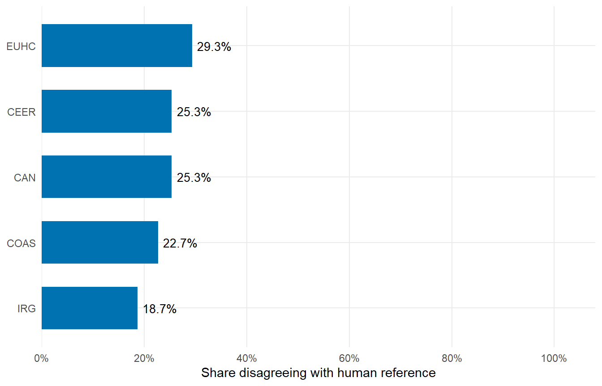

| PON | Accuracy | Precision | Recall | Specificity | F1 | TP | FP | FN | TN |
|---|---|---|---|---|---|---|---|---|---|
| CAN | 74.7% | 81.5% | 88.3% | 20.0% | 84.8% | 53 | 12 | 7 | 3 |
| CEER | 74.7% | 81.5% | 88.3% | 20.0% | 84.8% | 53 | 12 | 7 | 3 |
| COAS | 77.3% | 83.1% | 90.0% | 26.7% | 86.4% | 54 | 11 | 6 | 4 |
| EUHC | 70.7% | 88.0% | 73.3% | 60.0% | 80.0% | 44 | 6 | 16 | 9 |
| IRG | 81.3% | 88.3% | 88.3% | 53.3% | 88.3% | 53 | 7 | 7 | 8 |
2024 Zero-Shot Results
Evaluation of the preserved December 2024 outputs
Scope
This archival report retains only the five zero-shot response files from the final Dec. 24, 2024 pipeline for which a recovered human-reference vector is available. Historical step-by-step files remain preserved on disk but are no longer part of the analytical design.
BEREC is retained only as archival provenance and is excluded from the comparative experiment. All results on this page therefore use IRG, EUHC, COAS, CAN, and CEER.
Performance by PON
Question: What share of each PON’s 15 classifications disagreed with the recovered human reference?

Question-level discrepancies
| Question | PON | LLM | Human | Type |
|---|---|---|---|---|
| 2 | CAN | FALSE | TRUE | FN |
| 2 | CAN | FALSE | TRUE | FN |
| 2 | CAN | FALSE | TRUE | FN |
| 2 | CAN | FALSE | TRUE | FN |
| 2 | CAN | FALSE | TRUE | FN |
| 3 | CAN | FALSE | TRUE | FN |
| 3 | CAN | FALSE | TRUE | FN |
| 3 | CEER | FALSE | TRUE | FN |
| 3 | CEER | FALSE | TRUE | FN |
| 3 | COAS | TRUE | FALSE | FP |
| 3 | COAS | TRUE | FALSE | FP |
| 3 | COAS | TRUE | FALSE | FP |
| 3 | EUHC | FALSE | TRUE | FN |
| 3 | EUHC | FALSE | TRUE | FN |
| 3 | IRG | FALSE | TRUE | FN |
| 3 | IRG | FALSE | TRUE | FN |
| 4 | CEER | FALSE | TRUE | FN |
| 4 | CEER | FALSE | TRUE | FN |
| 4 | CEER | FALSE | TRUE | FN |
| 4 | CEER | FALSE | TRUE | FN |
| 4 | CEER | FALSE | TRUE | FN |
| 5 | CAN | TRUE | FALSE | FP |
| 5 | CAN | TRUE | FALSE | FP |
| 5 | CEER | TRUE | FALSE | FP |
| 5 | CEER | TRUE | FALSE | FP |
| 5 | COAS | FALSE | TRUE | FN |
| 5 | COAS | FALSE | TRUE | FN |
| 5 | COAS | FALSE | TRUE | FN |
| 5 | EUHC | FALSE | TRUE | FN |
| 5 | EUHC | FALSE | TRUE | FN |
| 5 | EUHC | FALSE | TRUE | FN |
| 5 | IRG | TRUE | FALSE | FP |
| 5 | IRG | TRUE | FALSE | FP |
| 6 | CAN | TRUE | FALSE | FP |
| 6 | CAN | TRUE | FALSE | FP |
| 6 | CAN | TRUE | FALSE | FP |
| 6 | CEER | TRUE | FALSE | FP |
| 6 | CEER | TRUE | FALSE | FP |
| 6 | CEER | TRUE | FALSE | FP |
| 6 | COAS | TRUE | FALSE | FP |
| 6 | COAS | TRUE | FALSE | FP |
| 6 | COAS | TRUE | FALSE | FP |
| 6 | EUHC | TRUE | FALSE | FP |
| 6 | EUHC | TRUE | FALSE | FP |
| 6 | EUHC | TRUE | FALSE | FP |
| 6 | IRG | FALSE | TRUE | FN |
| 6 | IRG | FALSE | TRUE | FN |
| 7 | CAN | TRUE | FALSE | FP |
| 7 | CEER | TRUE | FALSE | FP |
| 7 | COAS | TRUE | FALSE | FP |
| 7 | EUHC | FALSE | TRUE | FN |
| 7 | EUHC | FALSE | TRUE | FN |
| 7 | EUHC | FALSE | TRUE | FN |
| 7 | EUHC | FALSE | TRUE | FN |
| 7 | IRG | TRUE | FALSE | FP |
| 9 | CAN | TRUE | FALSE | FP |
| 9 | CEER | TRUE | FALSE | FP |
| 9 | COAS | TRUE | FALSE | FP |
| 9 | EUHC | FALSE | TRUE | FN |
| 9 | EUHC | FALSE | TRUE | FN |
| 9 | EUHC | FALSE | TRUE | FN |
| 9 | EUHC | FALSE | TRUE | FN |
| 9 | IRG | TRUE | FALSE | FP |
| 11 | CAN | TRUE | FALSE | FP |
| 11 | CEER | TRUE | FALSE | FP |
| 11 | COAS | TRUE | FALSE | FP |
| 11 | EUHC | TRUE | FALSE | FP |
| 11 | IRG | TRUE | FALSE | FP |
| 14 | CAN | TRUE | FALSE | FP |
| 14 | CAN | TRUE | FALSE | FP |
| 14 | CEER | TRUE | FALSE | FP |
| 14 | CEER | TRUE | FALSE | FP |
| 14 | COAS | TRUE | FALSE | FP |
| 14 | COAS | TRUE | FALSE | FP |
| 14 | EUHC | TRUE | FALSE | FP |
| 14 | EUHC | TRUE | FALSE | FP |
| 14 | IRG | TRUE | FALSE | FP |
| 14 | IRG | TRUE | FALSE | FP |
| 15 | CAN | TRUE | FALSE | FP |
| 15 | CAN | TRUE | FALSE | FP |
| 15 | CEER | TRUE | FALSE | FP |
| 15 | CEER | TRUE | FALSE | FP |
| 15 | COAS | FALSE | TRUE | FN |
| 15 | COAS | FALSE | TRUE | FN |
| 15 | COAS | FALSE | TRUE | FN |
| 15 | EUHC | FALSE | TRUE | FN |
| 15 | EUHC | FALSE | TRUE | FN |
| 15 | EUHC | FALSE | TRUE | FN |
| 15 | IRG | FALSE | TRUE | FN |
| 15 | IRG | FALSE | TRUE | FN |
| 15 | IRG | FALSE | TRUE | FN |
The purpose of this page is archival. The six-scenario report evaluates how classifications vary across model choice, protocol, and their combination.